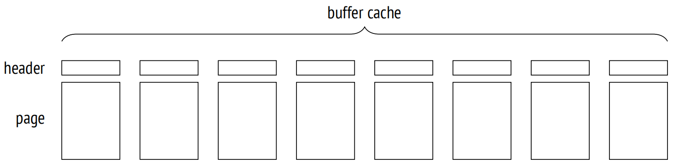
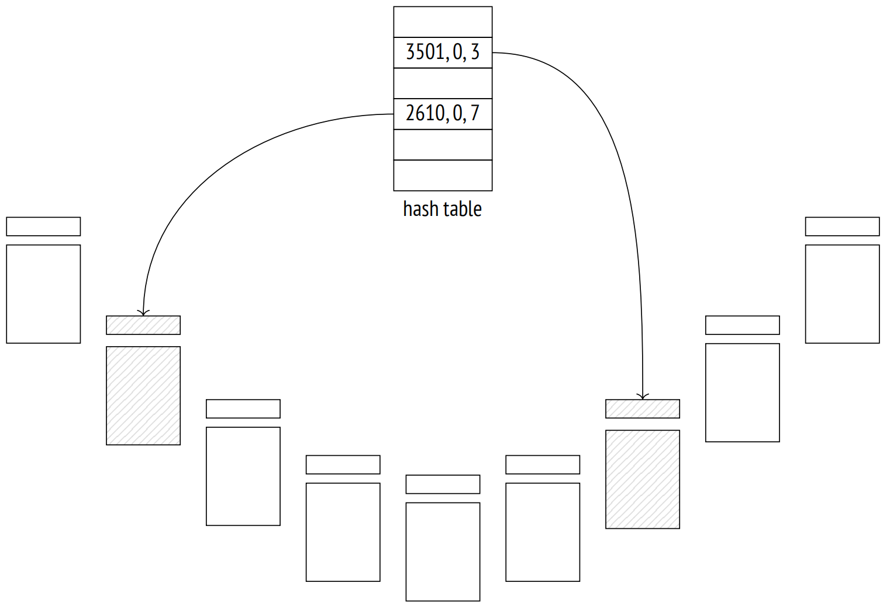

第 9 章：缓冲区缓存
9.1 缓存
在现代计算机系统中，缓存无处不在 — 不管是在硬件层面还是在软件层面。仅处理器自身就可能有多达三到四层缓存。RAID 控制器和磁盘也有它们自己的缓存。
缓存用于平衡高速与低速内存之间的性能差异。高速内存昂贵且容量更小，而低速内存更大且更便宜。因此，高速内存无法容纳所有存储在低速内存中的数据。但在大多数情况下，每个特定时刻只有一小部分数据被频繁使用，因此为缓存分配一些高速内存以保持热数据，可以显著减少低速内存访问所带来的开销。
在 PostgreSQL 中，缓冲区缓存 1 中保存着关系页面，以平衡对磁盘 (毫秒级) 和 RAM (纳秒级) 的访问时间。
出于同样目的，操作系统也有其自己的缓存。基于此，数据库系统通常被设计为要避免双缓存：通常直接查询存储在磁盘上的数据，绕过 OS 缓存。但是 PostgreSQL 使用了不同的方式：它通过缓冲区文件操作来读取和写入所有的数据。
如果使用 Direct I/O ，那么便可以避免双缓存的问题。这将减少开销，因为 PostgreSQL 将使用直接内存访问 (DMA) 而不是将缓冲区页面复制到操作系统地址空间中；此外，你将直接控制磁盘上的物理写入。然而，Direct I/O 不支持数据预取 (Buffered I/O 支持预取)，因此你必须通过异步 I/O 单独实现它，这需要在 PostgreSQL 内核代码中进行大量的修改，以及处理操作系统在 Direct I/O 和异步 I/O 支持方面的不兼容问题。但一旦建立了异步通信，你便可以享受到无等待磁盘访问的额外好处。
PostgreSQL 社区已经开始了这项重大工程 2，但实际结果仍需要很长时间才能出现。
9.2 缓冲区缓存设计
缓冲区缓存位于服务器的共享内存中，所有进程都可以访问。它占据了大部分的共享内存，并且无疑是 PostgreSQL 中最重要和最复杂的数据结构之一。理解缓存的工作原理本身就很重要，但更重要的是，许多其他结构 (例如子事务、CLOG 事务状态和 WAL 条目) 使用类似的缓存机制，尽管这些结构更简单一些。
这个缓存的名称受其内部结构的启发，因为它由一系列缓冲区组成。每个缓冲区保留了一个内存块，可以容纳单个数据页及其页头 3。
页头包含了一些关于缓冲区和其中页面的信息，比如：
- 页面的物理位置 (文件 ID、分支和分支中的块号)
- 用于显示页面中的数据已被修改，并且需要回写到磁盘的属性 (这样的页面被称为脏页)
- 缓冲区使用计数
- 锁定计数 (或者引用计数)
要访问表的数据页，进程会向缓冲区管理器 4 请求它，并接收包含该页的缓冲区 ID。然后，读取缓存数据并在需要时直接在缓存中修改它。当页面正在使用时，其缓冲区被锁定。锁定过程会禁止逐出缓存页面，并且可以与其他锁一起使用。每次锁定也会增加使用计数。
只要页面被缓存，它的使用就不会产生任何文件操作。
我们可以使用 pg_buffercache 扩展来窥探缓冲区缓存：
=> CREATE EXTENSION pg_buffercache;让我们创建一个表并插入一行：
=> CREATE TABLE cacheme(
id integer
) WITH (autovacuum_enabled = off);
=> INSERT INTO cacheme VALUES (1);现在缓冲区缓存包含一个带有新插入行的堆页面。你可以通过选择与特定表相关的所有缓冲区进行查看。由于需要多次执行这样的查询，所以让我们将其封装至一个函数中：
=> CREATE FUNCTION buffercache(rel regclass)
RETURNS TABLE(
bufferid integer, relfork text, relblk bigint,
isdirty boolean, usagecount smallint, pins integer
) AS $$
SELECT bufferid,
CASE relforknumber
WHEN 0 THEN 'main'
WHEN 1 THEN 'fsm'
WHEN 2 THEN 'vm'
END,
relblocknumber,
isdirty,
usagecount,
pinning_backends
FROM pg_buffercache
WHERE relfilenode = pg_relation_filenode(rel)
ORDER BY relforknumber, relblocknumber;
$$ LANGUAGE sql;
=> SELECT * FROM buffercache('cacheme');
bufferid | relfork | relblk | isdirty | usagecount | pins
−−−−−−−−−−+−−−−−−−−−+−−−−−−−−+−−−−−−−−−+−−−−−−−−−−−−+−−−−−−
268 | main | 0 | t | 1 | 0
(1 row)页面是脏的：它已经被修改，但尚未写入磁盘。它的使用计数设置为 1。
9.3 缓存命中
当缓冲区管理器需要读取一个页面时 5，它首先会检查缓冲区缓存。
所有缓冲区 ID 都存储在一个哈希表中 6，用于加速它们的搜索。
许多现代编程语言将哈希表作为基础数据类型之一。哈希表通常被称为关联数组，实际上，从用户的角度来看，它们确实看起来像一个数组。但是，它们的索引 (哈希键) 可以是任何数据类型，例如一个文本字符串，而不是一个整数。
虽然可能的键值范围会非常大，但哈希表一次性永远不会包含那么多不同的值。哈希的思想是使用哈希函数将键值转换为一个整数。这个数字 (或这个数字的某些位) 被用作常规数组的索引。这个数组的元素被称为哈希表桶。
一个好的哈希函数在桶之间或多或少均匀地分配哈希键，但它仍然可能为不同的键分配相同的数字，从而将它们放入到同一个桶中；这种情况被称为哈希碰撞。因此，值与哈希键一起存储在桶中；要通过其键访问哈希值，PostgreSQL 必须检查所有存储在桶中的键。
哈希表有多种实现方式；在所有可能的选项中，缓冲区缓存使用的是可扩展哈希表，通过链解决哈希碰撞 7。
哈希键由表文件的 ID、分支类型和此分支文件中的页面 ID 组成。因此，知道页面后，PostgreSQL 便可以快速找到包含该页面的缓冲区，或确认该页面当前没有被缓存。
长期以来，缓冲区缓存的实现因依赖于哈希表而饱受批评：当需要查找某个特定关系的页面所占用的所有缓冲区时，这种结构是没有用的，因为在运行 DROP 和 TRUNCATE 命令，或在清理期间截断一个表时 8，需要从缓存中移除页面。然而，到目前为止还没有人提出适当的替代方案。
如果哈希表包含所需的缓冲区 ID，缓冲区管理器会锁定此缓冲区并将其 ID 返回给进程。然后这个进程便可以开始使用缓存页面，而不会产生任何 I/O 流量。
为了锁定一个缓冲区，PostgreSQL 必须在其头部增加锁定计数；一个缓冲区可以同时被多个进程锁定。当其锁定计数大于零时，表明该缓冲区正在使用，不允许对其内容进行根本性的更改。例如，可以出现一条新的元组 (按照可见性规则，它将是不可见的)，但页面本身不能被替换。
当使用 analyze 和 buffers 选项运行时，EXPLAIN 命令会执行所展示的执行计划，并显示使用的缓冲区数量：
=> EXPLAIN (analyze, buffers, costs off, timing off, summary off)
SELECT * FROM cacheme;
QUERY PLAN
−−−−−−−−−−−−−−−−−−−−−−−−−−−−−−−−−−−−−−−−−−−−−
Seq Scan on cacheme (actual rows=1 loops=1)
Buffers: shared hit=1
Planning:
Buffers: shared hit=12 read=7
(4 rows)此处 hit = 1 意味着在缓存中找到了唯一需要读取的页面。
锁定缓冲区操作使得使用计数增加了 1：
=> SELECT * FROM buffercache('cacheme');
bufferid | relfork | relblk | isdirty | usagecount | pins
−−−−−−−−−−+−−−−−−−−−+−−−−−−−−+−−−−−−−−−+−−−−−−−−−−−−+−−−−−−
268 | main | 0 | t | 2 | 0
(1 row)为了在查询执行期间观察锁定行为，让我们打开一个游标 — 它将保持缓冲区锁定，因为它需要提供对结果集中下一行的快速访问：
=> BEGIN;
=> DECLARE c CURSOR FOR SELECT * FROM cacheme;
=> FETCH c;
id
−−−−
1
(1 row)
=> SELECT * FROM buffercache('cacheme');
bufferid | relfork | relblk | isdirty | usagecount | pins
−−−−−−−−−−+−−−−−−−−−+−−−−−−−−+−−−−−−−−−+−−−−−−−−−−−−+−−−−−−
268 | main | 0 | t | 3 | 1
(1 row)如果某个进程无法使用被锁定的缓冲区，该进程通常会跳过它，并简单地选择另外一个缓冲区。我们可以在表清理期间看到这一点：
=> VACUUM VERBOSE cacheme; INFO: vacuuming "public.cacheme" INFO: table "cacheme": found 0 removable, 0 nonremovable row versions in 1 out of 1 pages DETAIL: 0 dead row versions cannot be removed yet, oldest xmin: 877 Skipped 1 page due to buffer pins, 0 frozen pages. CPU: user: 0.00 s, system: 0.00 s, elapsed: 0.00 s. VACUUM
因为无法从被锁定的缓冲区中物理移除元组，所以页面被跳过了。
但如果的确需要这个缓冲区，那么进程将加入到队列中，并等待对这个缓冲区的独占访问。此操作的一个示例是带有 freeze 的清理操作 9。
一旦游标关闭或移动到另一个页面，缓冲区就会被取消锁定。在此示例中，这发生在事务结束时：
=> COMMIT;
=> SELECT * FROM buffercache('cacheme');
bufferid | relfork | relblk | isdirty | usagecount | pins
−−−−−−−−−−+−−−−−−−−−+−−−−−−−−+−−−−−−−−−+−−−−−−−−−−−−+−−−−−−
268 | main | 0 | t | 3 | 0
310 | vm | 0 | f | 2 | 0
(2 rows)页面修改也受相同的锁定机制保护。例如，让我们再向表中插入另一行 (它会进入同一页面)：
=> INSERT INTO cacheme VALUES (2);
=> SELECT * FROM buffercache('cacheme');
bufferid | relfork | relblk | isdirty | usagecount | pins
−−−−−−−−−−+−−−−−−−−−+−−−−−−−−+−−−−−−−−−+−−−−−−−−−−−−+−−−−−−
268 | main | 0 | t | 4 | 0
310 | vm | 0 | f | 2 | 0
(2 rows)PostgreSQL 不会立即执行任何磁盘写入操作：页面会在缓冲区缓存中保持脏的状态一段时间，这为读取和写入操作带来了一些性能提升。
9.4 缓存未命中
如果哈希表中没有与查询页面相关的条目，那意味着这个页面没有被缓存。在此情况下，将分配一个新的缓冲区 (并立即锁定)，随后页面被读入此缓冲区中，哈希表引用也相应地被修改。
让我们重启实例以清除缓冲区缓存：
postgres$ pg_ctl restart -l /home/postgres/logfile尝试读取页面会导致缓存未命中，页面将被加载到一个新的缓冲区中：
=> EXPLAIN (analyze, buffers, costs off, timing off, summary off)
SELECT * FROM cacheme;
QUERY PLAN
−−−−−−−−−−−−−−−−−−−−−−−−−−−−−−−−−−−−−−−−−−−−−
Seq Scan on cacheme (actual rows=2 loops=1)
Buffers: shared read=1 dirtied=1
Planning:
Buffers: shared hit=15 read=7
(4 rows)现在计划显示的是 read 状态，而不是 hit，这表明缓存未命中。此外，由于查询修改了一些提示位，这个页面已经变成了脏页。
缓冲区缓存查询显示，新添加页面的使用计数被设置为 1：
=> SELECT * FROM buffercache('cacheme');
bufferid | relfork | relblk | isdirty | usagecount | pins
−−−−−−−−−−+−−−−−−−−−+−−−−−−−−+−−−−−−−−−+−−−−−−−−−−−−+−−−−−−
98 | main | 0 | t | 1 | 0
(1 row)pg_statio_all_tables 视图包含表的缓冲区缓存使用情况的完整统计数据：
=> SELECT heap_blks_read, heap_blks_hit
FROM pg_statio_all_tables
WHERE relname = 'cacheme';
heap_blks_read | heap_blks_hit
−−−−−−−−−−−−−−−−+−−−−−−−−−−−−−−−
2 | 5
(1 row)PostgreSQL 为索引和序列提供了类似的视图。它们还可以显示有关 I/O 操作的统计数据，但前提是需要打开 track_io_timing 参数。
9.4.1 缓冲区查找与逐出
为页面选择缓冲区并非易事 10。有两种可能的情况：
- 服务器启动后，所有缓冲区都是空的，并被绑定到一个列表中。当一些缓冲区仍然空闲时，从磁盘读取的下一个页面将占用第一个缓冲区，并将其从列表中移除。缓冲区只有在其页面消失时才能返回到列表中 11，而不是被另一个页面替换。如果调用 DROP 或 TRUNCATE 命令，或者表在清理期间被截断，则可能会发生这种情况。
- 最终，所有空闲的缓冲区都将被用完 (因为数据库的大小通常大于为缓存分配的内存块)。那个时候，缓冲区管理器将不得不选择一个已经在使用的缓冲区，并从这个缓冲区中逐出缓存页面。逐出操作使用的是时钟扫描算法，时钟隐喻很好地说明了这一点。时钟指针指向一个缓冲区，开始绕着缓冲区缓存转动，并且在经过时将每个缓存页面的使用计数减一。时钟指针找到的第一个计数为零，并且未被锁定的缓冲区将被清除。因此，每次访问缓冲区 (即锁定) 时，使用计数都会增加，而当缓冲区管理器搜索要逐出的页面时，使用计数会减少。最终，最近最少使用的页面首先被逐出，而那些经常访问的页面将在缓存中保留更长时间。可以猜到，如果所有缓冲区的使用计数均不等于零，在它们中的任何一个计数变为零之前，时钟指针必须完成一次以上的完整循环。为了避免多次循环，PostgreSQL 将使用计数限制为 5 次。一旦找到了要逐出的缓冲区，便需要从哈希表中删除仍在该缓冲区中的页面引用。但是如果这个缓冲区是脏的，也就是说，它包含了一些修改过的数据，那么旧页面将不能被简单地丢弃 — 缓冲区管理器必须先将其写入到磁盘。

然后缓冲区管理器将一个新页面读入所找到的缓冲区中 — 无论它是否需要被逐出或仍然是空闲的。此操作使用的是 Buffered I/O，所以只有当操作系统无法在其自己的缓存中找到该页面时，才会从磁盘读取该页面。
那些使用 Direct I/O 并且不依赖操作系统缓存的数据库系统区分逻辑读 (来自 RAM，即来自缓冲区缓存) 和物理读 (来自磁盘)。从 PostgreSQL 的角度来看，页面既可以从缓冲区缓存中读取，也可以从操作系统请求，但是在后一种情况下，无法判断页面是在 RAM 中找到的，还是从磁盘读取的。
哈希表被更新以引用新页面，并且缓冲区被锁定。其使用次数增加，此刻设置为 1，这允许在时钟扫描算法遍历缓冲区缓存期间，页面至少能保留一整轮。
9.5 批量逐出
如果执行批量读取或写入操作，存在一次性的数据从缓冲区缓存中挤出有用页面的风险。
作为预防措施，批量操作使用的是相对较小的环形缓冲区，并且驱逐操作在其边界内执行，不会影响其他缓冲区。
除了 “buffer ring” 这个术语之外，代码中还使用了术语 “ring buffer”。 然而，这个同义词相当模糊，因为环形缓冲区本身由若干个缓冲区 (也属于缓冲区缓存) 组成。在这方面，术语 “buffer ring” 更为准确。
特定大小的环形缓冲区由依次使用的一组缓冲区组成。起初，环形缓冲区是空的，各个缓冲区在以常规方式被从缓冲区缓存中选择后，逐个加入到环形缓冲区中。然后驱逐策略开始发挥作用，但是仅限于环内 12。
添加到环中的缓冲区不会从缓冲区缓存中排除，仍然可以被其他操作使用。因此，如果要重用的缓冲区被锁定了，或者它的使用计数高于 1，它将简单地被从环中剥离，并被另一个缓冲区替换。
PostgreSQL 支持三种逐出策略。
批量读取策略用于对大表的顺序扫描，当大表的大小超过了缓冲区缓存的 1/4 时便会使用。环形缓冲区占用 256 kB (32 个标准页面)。
此策略不允许将脏页写入磁盘以释放缓冲区；相反，缓冲区从环中排除，并被另一个取代。因此，读取不必等待写入完成，因此执行得更快。
如果发现表已在扫描中，那么开始另一次扫描的进程会加入现有的环形缓冲区，并访问当前可用的数据，而不会产生额外的 I/O 操作 13。当第一个进程完成扫描后，第二个进程返回到表跳过的部分。
批量写入策略由 COPY FROM、CREATE TABLE AS SELECT 和 CREATE MATERIALIZED VIEW 命令，以及那些导致表重写的 ALTER TABLE 变体应用。所分配的环形缓冲区很大，默认大小是 16 MB (2048 个标准页面)，但它永远不会超过缓冲区缓存总大小的 1/8。
清理策略由清理进程在执行全表扫描而不考虑可见性映射时使用。环形缓冲区分配了 256 kB 的内存 (32 个标准页面)。
环形缓冲区并不总是能防止不希望的驱逐。如果 UPDATE 或 DELETE 命令影响了大量行，执行的表扫描会应用批量读取策略，但由于页面不断被修改，环形缓冲区环实际上变得毫无用处。
另外一个值得一提的例子是在 TOAST 表中存储超大数据。尽管可能需要读取大量数据，但 TOAST 值始终通过索引访问，因此它们会绕过环形缓冲区。
让我们仔细看看批量读取策略。为方便起见，我们将创建一个表，使插入的行占据整个页面。 默认情况下，缓冲区缓存大小为 16384 个页面，每个 8 kB。 因此，表必须占用超过 4096 个页面，才能在扫描时使用环形缓冲区。
=> CREATE TABLE big(
id integer PRIMARY KEY GENERATED ALWAYS AS IDENTITY,
s char(1000)
) WITH (fillfactor = 10);
=> INSERT INTO big(s)
SELECT 'FOO' FROM generate_series(1,4096+1);让我们分析一下表：
=> ANALYZE big;
=> SELECT relname, relfilenode, relpages
FROM pg_class
WHERE relname IN ('big', 'big_pkey');
relname | relfilenode | relpages
−−−−−−−−−−+−−−−−−−−−−−−−+−−−−−−−−−−
big | 16546 | 4097
big_pkey | 16551 | 14
(2 rows)重启服务器以清除缓存，因为现在它包含了在分析过程中读取的一些堆页面。
postgres$ pg_ctl restart -l /home/postgres/logfile重启服务器之后，让我们读取整个表：
=> EXPLAIN (analyze, costs off, timing off, summary off)
SELECT id FROM big;
QUERY PLAN
−−−−−−−−−−−−−−−−−−−−−−−−−−−−−−−−−−−−−−−−−−−−
Seq Scan on big (actual rows=4097 loops=1)
(1 row)堆页面只占用 32 个缓冲区，这些缓冲区构成了此操作的环形缓冲区：
=> SELECT count(*)
FROM pg_buffercache
WHERE relfilenode = pg_relation_filenode('big'::regclass);
count
−−−−−−−
32
(1 row)但在索引扫描的情况下，并不使用环形缓冲区：
=> EXPLAIN (analyze, costs off, timing off, summary off)
SELECT * FROM big ORDER BY id;
QUERY PLAN
−−−−−−−−−−−−−−−−−−−−−−−−−−−−−−−−−−−−−−−−−−−−−−−−−−−−−−−−−−−−−
Index Scan using big_pkey on big (actual rows=4097 loops=1)
(1 row)缓冲区缓存最终包含了整个表和整个索引：
=> SELECT relfilenode, count(*)
FROM pg_buffercache
WHERE relfilenode IN (
pg_relation_filenode('big'),
pg_relation_filenode('big_pkey')
)
GROUP BY relfilenode;
relfilenode | count
−−−−−−−−−−−−−+−−−−−−−
16546 | 4097
16551 | 14
(2 rows)9.6 选择缓冲区缓存大小
缓冲区缓存的大小由 shared_buffers 参数定义。众所周知，其默认值很低，因此在安装 PostgreSQL 后增加这个值是有必要的。在此情况下，你需要重新加载服务器，因为在服务器启动时便为缓存分配了共享内存。
但我们如何确定一个合适的值呢？
即使是一个非常大的数据库，也有一组同时使用的有限热数据。在理想情况下，这个数据集必须适合缓冲区缓存 (为一次性的数据预留一些空间)。如果缓存大小太小，那么频繁使用的页面将一直相互驱逐，从而导致过多的 I/O 操作。但是无脑增加缓存大小也不是一个好主意：RAM 是稀缺资源，此外，更大的缓存会带来更高的维护成本。
最佳的缓冲区缓存大小因系统而异：它取决于可用内存的总大小、数据概况和工作负载类型等因素。不幸的是，没有一个万能的值或公式能同等适合所有场景。
你还应该记住， PostgreSQL 中的缓存未命中不一定会触发物理 I/O。如果缓冲区缓存非常小，操作系统缓存会使用剩余的空闲内存，并且可以在一定程度上有所缓解。但与数据库不同的是，操作系统对读取的数据一无所知，因此它采用了一种不同的驱逐策略。
一个典型的建议是从 1/4 RAM 开始，然后根据需要调整这个设置。
最好的方式是不断试验：你可以增加或减少缓存大小，并比较系统性能。当然，这需要一个完全类似于生产系统的测试系统，并且能够重现典型的工作负载。
你还可以使用 pg_buffercache 扩展进行一些分析。例如，基于使用情况分析缓冲区的分布状况：
=> SELECT usagecount, count(*)
FROM pg_buffercache
GROUP BY usagecount
ORDER BY usagecount;
usagecount | count
−−−−−−−−−−−−+−−−−−−−
1 | 4128
2 | 50
3 | 4
4 | 4
5 | 73
| 12125
(6 rows)空的使用计数对应于空闲的缓冲区。在这种情况下，是完全可以预料的，因为服务器已重新启动，并且大部分时间都保持空闲状态。大多数使用的缓冲区包含后端进程读取的系统表页面，用于填充其系统表缓存并执行查询。
我们可以检查每个表的哪一部分被缓存，以及这些数据是否是热的 (如果一个页面的使用计数大于 1，那么此处便认为它是热的)：
=> SELECT c.relname,
count(*) blocks,
round( 100.0 * 8192 * count(*) /
pg_table_size(c.oid) ) AS "% of rel",
round( 100.0 * 8192 * count(*) FILTER (WHERE b.usagecount > 1) /
pg_table_size(c.oid) ) AS "% hot"
FROM pg_buffercache b
JOIN pg_class c ON pg_relation_filenode(c.oid) = b.relfilenode
WHERE b.reldatabase IN (
0, -- cluster-wide objects
(SELECT oid FROM pg_database WHERE datname = current_database())
)
AND b.usagecount IS NOT NULL
GROUP BY c.relname, c.oid
ORDER BY 2 DESC
LIMIT 10;
relname | blocks | % of rel | % hot
−−−−−−−−−−−−−−−−−−−−−−−−−−−−−−−−−+−−−−−−−−+−−−−−−−−−−+−−−−−−−
big | 4097 | 100 | 1
pg_attribute | 30 | 48 | 47
big_pkey | 14 | 100 | 0
pg_proc | 13 | 12 | 6
pg_operator | 11 | 61 | 50
pg_class | 10 | 59 | 59
pg_proc_oid_index | 9 | 82 | 45
pg_attribute_relid_attnum_index | 8 | 73 | 64
pg_proc_proname_args_nsp_index | 6 | 18 | 6
pg_amproc | 5 | 56 | 56
(10 rows)这个例子表明大表及其索引已被完全缓存，但它们的页面并未被频繁使用。
从不同角度分析数据，你可以获得一些有用的见解。但是，在运行 pg_buffercache 查询时，请确保遵循以下简单规则：
- 多次重复这样的查询，因为返回的数据在一定程度上会有所不同。
- 不要连续不断地运行这样的查询，因为 pg_buffercache 扩展会锁定查看的缓冲区，即使只是短暂的。
9.7 缓存预热
服务器重启后，缓存需要一段时间来预热，也就是积累频繁使用的数据。立即缓存某些表可能会有所帮助， pg_prewarm 扩展正是用于此目的：
=> CREATE EXTENSION pg_prewarm;除了将表加载到缓冲区缓存 (或仅加载到操作系统缓存) 之外，此扩展还可以将当前缓存状态写入磁盘，然后在服务器重新启动后恢复。要启用此功能，你需要将此扩展的库添加到 shared_preload_libraries 并重启服务器：
=> ALTER SYSTEM SET shared_preload_libraries = 'pg_prewarm';
postgres$ pg_ctl restart -l /home/postgres/logfile如果 pg_prewarm.autoprewarm 设置没有改变，服务器重新加载后会自动启动一个名为 autoprewarm leader 的进程；一旦达到 pg_prewarm.autoprewarm_interval 秒，这个进程便会将缓存页面的列表刷新到磁盘 (会使用一个 max_parallel_processes 槽)。
postgres$ ps -o pid,command \
--ppid `head -n 1 /usr/local/pgsql/data/postmaster.pid` | \
grep prewarm
23124 postgres: autoprewarm leader现在服务器已经重启，大表没有被缓存：
=> SELECT count(*)
FROM pg_buffercache
WHERE relfilenode = pg_relation_filenode('big'::regclass);
count
−−−−−−−
0
(1 row)如果你有充分的理由认为整个表将被频繁使用，并且磁盘访问使响应时间变得无法接受，那么你可以提前将这个表加载到缓冲区缓存中：
=> SELECT pg_prewarm('big');
pg_prewarm
−−−−−−−−−−−−
4097
(1 row)
=> SELECT count(*)
FROM pg_buffercache
WHERE relfilenode = pg_relation_filenode('big'::regclass);
count
−−−−−−−
4097
(1 row)页面列表将转储到 PGDATA/autoprewarm.blocks 文件中。你可以等到 autoprewarm leader 首次完成，但此处我们手动执行转储：
=> SELECT autoprewarm_dump_now();
autoprewarm_dump_now
−−−−−−−−−−−−−−−−−−−−−−
4224
(1 row)刷盘的页面数量大于 4097，因为考虑了所有正在使用的缓冲区。此文件以文本格式编写，它包含数据库、表空间和文件 ID，以及分支和段号：
postgres$ head -n 10 /usr/local/pgsql/data/autoprewarm.blocks
<<4224>>
0,1664,1262,0,0
0,1664,1260,0,0
16391,1663,1259,0,0
16391,1663,1259,0,1
16391,1663,1259,0,2
16391,1663,1259,0,3
16391,1663,1249,0,0
16391,1663,1249,0,1
16391,1663,1249,0,2让我们再次重启服务器。
postgres$ pg_ctl restart -l /home/postgres/logfile此时，表立刻出现在了缓存中：
=> SELECT count(*)
FROM pg_buffercache
WHERE relfilenode = pg_relation_filenode('big'::regclass);
count
−−−−−−−
4097
(1 row)autoprewarm leader 也会完成所有初始工作：它读取文件，根据数据库对页面进行排序，重新排列它们 (以便磁盘读取尽可能顺序执行)，然后将它们传递给 autoprewarm worker 进行处理。
9.8 本地缓存
临时表不遵循上述工作流程。由于临时数据仅对单个进程可见，因此没有必要将其加载到共享缓冲区缓存中。因此，临时数据使用的是拥有该表的进程的本地缓存 14。
一般来说，本地缓冲区缓存的工作方式类似于共享缓存：
- 通过哈希表进行页面搜索。
- 驱逐遵循标准算法 (除了不使用环形缓冲区)。
- 页面可以被锁定以避免被驱逐。
但是，本地缓存实现要简单得多，因为它既不需要处理内存结构上的锁 (缓冲区只能由单个进程访问)，也不需要容错机制 (临时数据最多存在至会话结束)。
由于通常只有少数会话使用临时表，因此本地缓存内存是按需分配的。会话可用的本地缓存的最大大小受到 temp_buffers 参数的限制。
尽管名称相似，但 temp_file_limit 参数与临时表无关；它与可能在查询执行期间创建的文件有关，用于临时存储中间数据。
在 EXPLAIN 命令的输出中，所有对本地缓冲区缓存的调用都标记为 local 而不是 shared：
=> CREATE TEMPORARY TABLE tmp AS SELECT 1;
=> EXPLAIN (analyze, buffers, costs off, timing off, summary off)
SELECT * FROM tmp;
QUERY PLAN
−−−−−−−−−−−−−−−−−−−−−−−−−−−−−−−−−−−−−−−−−
Seq Scan on tmp (actual rows=1 loops=1)
Buffers: local hit=1
Planning:
Buffers: shared hit=12 read=7
(4 rows)-
backend/storage/buffer/README ↩︎
-
www.postgresql.org/message-id/flat/20210223100344.llw5an2aklengrmn%40alap3.anarazel.de ↩︎
-
include/storage/buf_internals.h ↩︎
-
backend/storage/buffer/bufmgr.c ↩︎
-
backend/storage/buffer/bufmgr.c, ReadBuffer_common function ↩︎
-
backend/storage/buffer/buf_table.c ↩︎
-
backend/utils/hash/dynahash.c ↩︎
-
backend/storage/buffer/bufmgr.c, DropRelFileNodeBuffers function ↩︎
-
backend/storage/buffer/bufmgr.c, LockBufferForCleanup function ↩︎
-
backend/storage/buffer/freelist.c, StrategyGetBuffer function ↩︎
-
backend/storage/buffer/freelist.c, StrategyFreeBuffer function ↩︎
-
backend/storage/buffer/freelist.c, GetBufferFromRing function ↩︎
-
backend/access/common/syncscan.c ↩︎
-
backend/storage/buffer/localbuf.c ↩︎